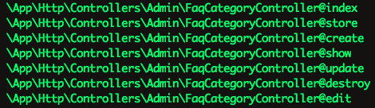
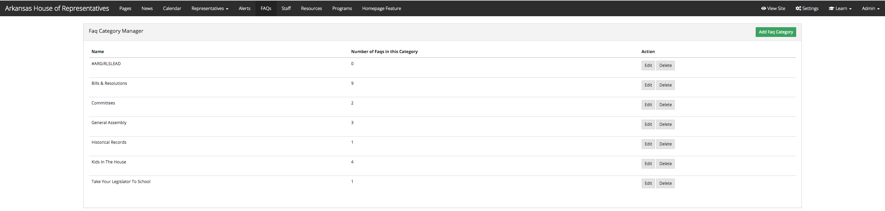
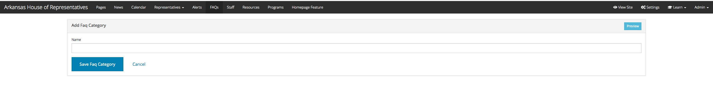
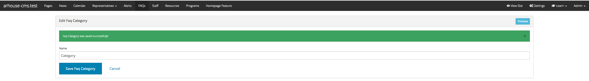
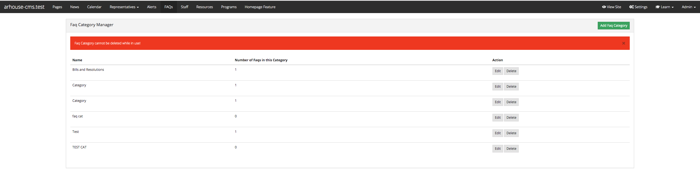
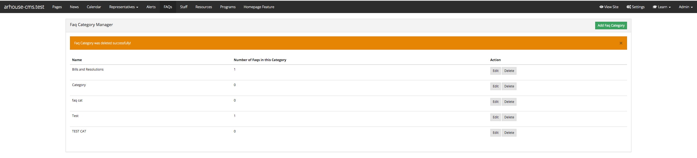

The Dynamo Controller Backend¶
This section isn’t necessary to know in order to use Dynamo. It is explaining encapsulated code within the package that you don’t actually need to see, but it might be helpful to understand what is going on when you create a model with Dynamo. Again, I would recommend watching the Quick Start video on the homepage of the documentation to get a better understanding.
The Dynamo Controller class contains CRUD functions similar to the functions of a Resource route in Laravel. Recall that when you create a Dynamo object with the command,
php artisan make:dynamo FaqCategory
Dynamo will generate a route in your routes->web.php file,
Route::resource('faqcategory', '\App\Http\Controllers\Admin\FaqCategoryController');
that links to the Dynamo Controller. The following routes are generated in your Laravel application that you can see by running php artisan route:list:
The index function returns an index view or table of all the resources for that module. So in the Faq Category example, the index function would show a view of all the Faq Categories saved in the database:
public function index()
{
$items = $this->dynamo->getIndexItems();
return DynamoView::make($this->dynamo, 'dynamo::index', compact('items'));
}
Resulting DynamoView( screenshot is bootstrap3 theme instead of bootstrap4 ):
The next two functions are create() and store(). Create shows the form view that the user will use to create Faq Category objects:
public function create()
{
$item = new $this->dynamo->class;
$formOptions = [
'route' => $this->dynamo->getRoute('store'),
'files' => true,
];
return DynamoView::make($this->dynamo, 'dynamo::form', compact('item', 'formOptions'));
}
Resulting DynamoView:
Store() is the function that gets hit when the user presses the submit button on the Create an Faq Category form. Store will “store” this new Faq Category object in your database:
public function store(Request $request)
{
$item = new $this->dynamo->class;
$this->dynamo->store($item);
session(['alert-success' => $this->dynamo->getName() . ' was saved successfully!']);
return redirect()->route($this->dynamo->getRoute('edit'), $item->id);
}
Resulting DynamoView:
The next two functions are edit() and update() which go hand-in-hand the same way create() and store() go hand-in-hand. When the user clicks the edit button on one of the Faq Category objects in the index view, the form view for that particular employee will be presented to the user so they can make changes to that Faq Category (perhaps update a phone number, or in this case update the name of the category):
public function edit($id)
{
$className = $this->dynamo->class;
$item = $className::withoutGlobalScopes()->find($id);
$formOptions = [
'route' => [$this->dynamo->getRoute('update'), $id],
'method' => 'put',
'files' => true,
];
return DynamoView::make($this->dynamo, 'dynamo::form', compact('item', 'formOptions'));
}
Update() gets hit when the user presses the Submit button and whatever changes they made will get updated for that particular Faq Category in the database:
public function update(Request $request, $id)
{
$className = $this->dynamo->class;
$item = $className::withoutGlobalScopes()->find($id);
$this->dynamo->store($item);
session(['alert-success' => $this->dynamo->getName() . ' was saved successfully!']);
return redirect()->route($this->dynamo->getRoute('edit'), $id);
}
The final function on the Dynamo Controller is destroy(). This function gets hit when the user clicks the delete button in the index view, and an alert will appear asking them if they are sure they want to do this. If they press yes, the item will attempt to be deleted. If the item can’t be deleted due to throwing a QueryException (because you can’t add or update a child row if another object in the database is using it for a foreign key), it will redirect and say you can’t do that because this object is in use. Otherwise, the item will be deleted and they will be shown a success message, and this Employee no longer exist:
public function destroy($id)
{
$className = $this->dynamo->class;
// Run through and look for fields with type 'multiSelect'
foreach($this->dynamo->getFields() as $field) {
if($field->type == 'hasMany') {
//if 'multiSelect' found then relational data may exist. Detach data from the model
$className::withoutGlobalScopes()->find($id)->{$field->key}()->detach();
}
}
$item = $className::withoutGlobalScopes()->findOrFail($id);
try {
$item->delete();
} catch (QueryException $e) {
session(['alert-danger' => $this->dynamo->getName() . ' cannot be deleted while in use!']);
return redirect()->route($this->dynamo->getRoute('index'));
}
session(['alert-warning' => $this->dynamo->getName() . ' was deleted successfully!']);
return redirect()->route($this->dynamo->getRoute('index'));
}
Resulting DynamoView if object can’t be deleted because it’s connected to other objects in the relational database via pivot tables:
Resulting DynamoView if object was successfully deleted:
